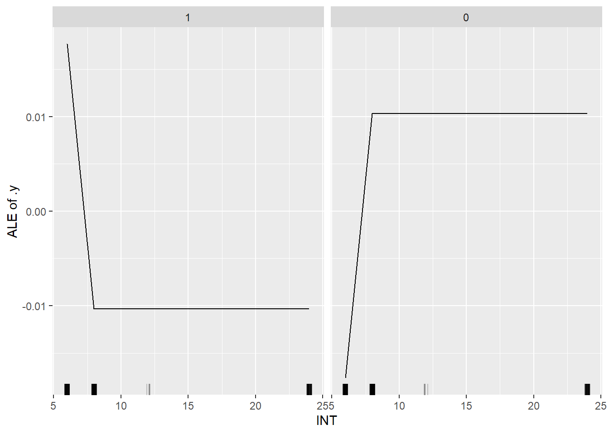

Chapter 5 Applications
set.seed(42)
library("iml")
library("lime")
library("MASS")
library("randomForest")## randomForest 4.6-14## Type rfNews() to see new features/changes/bug fixes.##
## Attachement du package : 'randomForest'## L'objet suivant est masqué depuis 'package:ggplot2':
##
## marginlibrary("caret")
library("e1071")5.1 Interprétation globale
5.1.1 Importance des variables
X <- df[which(names(df) != "ECOFF_4CMI")]
predictor <- Predictor$new(model_rf, data = X, y = df$ECOFF_4CMI)X_1 <- df_1[which(names(df_1) != "ECOFF_1CMI")]
predictor_1 <- Predictor$new(model_rf_1, data = X_1, y = df_1$ECOFF_1CMI)imp <- FeatureImp$new(predictor, loss = "ce", compare = "difference", n.repetitions = 15)
library("ggplot2")
plot(imp)
imp$results## feature importance.05 importance importance.95
## 1 INT 0.0147492625 0.023598820 0.028318584
## 2 cefe 0.0088495575 0.014749263 0.020648968
## 3 continue 0.0058997050 0.014749263 0.023598820
## 4 BWt 0.0088495575 0.014749263 0.020648968
## 5 UreeP 0.0088495575 0.014749263 0.021533923
## 6 pipe 0.0058997050 0.011799410 0.018584071
## 7 DSTD 0.0058997050 0.011799410 0.014749263
## 8 MOTTT_Pneumopathie_pleuresie 0.0058997050 0.011799410 0.018584071
## 9 CHOC 0.0058997050 0.011799410 0.017699115
## 10 PNAm 0.0058997050 0.011799410 0.018584071
## 11 taille 0.0079646018 0.011799410 0.015634218
## 12 BW 0.0050147493 0.011799410 0.015634218
## 13 CRP 0.0058997050 0.011799410 0.012684366
## 14 CreatP 0.0050147493 0.011799410 0.020648968
## 15 Schwartz 0.0058997050 0.011799410 0.018584071
## 16 SEXE 0.0029498525 0.008849558 0.014749263
## 17 PATHO_cardiovasculaire 0.0041297935 0.008849558 0.011799410
## 18 MOADM_respiratoire 0.0058997050 0.008849558 0.014749263
## 19 PQ 0.0020648968 0.008849558 0.011799410
## 20 ASAT 0.0029498525 0.008849558 0.012684366
## 21 ALAT 0.0058997050 0.008849558 0.014749263
## 22 BiliC 0.0050147493 0.008849558 0.014749263
## 23 MOTTT_bacteriemie_liee_au_KT 0.0000000000 0.005899705 0.011799410
## 24 PATHO_respiratoire 0.0020648968 0.005899705 0.008849558
## 25 VENT_oxy 0.0029498525 0.005899705 0.011799410
## 26 PELOD2 -0.0008849558 0.005899705 0.009734513
## 27 DysRespi 0.0029498525 0.005899705 0.009734513
## 28 PNN 0.0020648968 0.005899705 0.011799410
## 29 cefazo 0.0029498525 0.002949853 0.008849558
## 30 cefo 0.0000000000 0.002949853 0.007669617
## 31 mero 0.0000000000 0.002949853 0.003834808
## 32 MOADM_infectieux 0.0000000000 0.002949853 0.008849558
## 33 DysRen 0.0029498525 0.002949853 0.008849558
## 34 DysHem 0.0000000000 0.002949853 0.007669617
## 35 PATHO_neurologique 0.0000000000 0.000000000 0.002949853
## 36 Fievre 0.0000000000 0.000000000 0.005899705
## 37 VENT_VI 0.0000000000 0.000000000 0.002949853
## 38 DysHep 0.0000000000 0.000000000 0.004719764
## permutation.error
## 1 0.04424779
## 2 0.03539823
## 3 0.03539823
## 4 0.03539823
## 5 0.03539823
## 6 0.03244838
## 7 0.03244838
## 8 0.03244838
## 9 0.03244838
## 10 0.03244838
## 11 0.03244838
## 12 0.03244838
## 13 0.03244838
## 14 0.03244838
## 15 0.03244838
## 16 0.02949853
## 17 0.02949853
## 18 0.02949853
## 19 0.02949853
## 20 0.02949853
## 21 0.02949853
## 22 0.02949853
## 23 0.02654867
## 24 0.02654867
## 25 0.02654867
## 26 0.02654867
## 27 0.02654867
## 28 0.02654867
## 29 0.02359882
## 30 0.02359882
## 31 0.02359882
## 32 0.02359882
## 33 0.02359882
## 34 0.02359882
## 35 0.02064897
## 36 0.02064897
## 37 0.02064897
## 38 0.02064897imp_1 <- FeatureImp$new(predictor_1, loss = "ce", compare = "difference", n.repetitions = 15)
library("ggplot2")
plot(imp_1)imp_1$results## feature importance.05 importance importance.95
## 1 pipe 0.011799410 0.014749263 0.0176991150
## 2 INT 0.009144543 0.014749263 0.0185840708
## 3 cefe 0.002949853 0.005899705 0.0126843658
## 4 CHOC 0.000000000 0.005899705 0.0097345133
## 5 taille 0.000000000 0.005899705 0.0088495575
## 6 CRP 0.000000000 0.005899705 0.0088495575
## 7 BiliC 0.002949853 0.005899705 0.0067846608
## 8 UreeP 0.000000000 0.005899705 0.0067846608
## 9 CreatP 0.002949853 0.005899705 0.0088495575
## 10 cefazo 0.000000000 0.002949853 0.0067846608
## 11 DSTD 0.000000000 0.002949853 0.0058997050
## 12 continue 0.000000000 0.002949853 0.0058997050
## 13 MOTTT_Pneumopathie_pleuresie 0.000000000 0.002949853 0.0058997050
## 14 SEXE 0.000000000 0.002949853 0.0029498525
## 15 PNAm 0.000000000 0.002949853 0.0067846608
## 16 BW 0.002064897 0.002949853 0.0088495575
## 17 BWt 0.002064897 0.002949853 0.0058997050
## 18 PATHO_neurologique 0.002064897 0.002949853 0.0029498525
## 19 MOADM_respiratoire 0.000000000 0.002949853 0.0029498525
## 20 PELOD2 0.000000000 0.002949853 0.0067846608
## 21 DysRespi 0.002064897 0.002949853 0.0029498525
## 22 PQ 0.002064897 0.002949853 0.0058997050
## 23 ALAT 0.002064897 0.002949853 0.0058997050
## 24 Schwartz 0.002064897 0.002949853 0.0058997050
## 25 cefo 0.000000000 0.000000000 0.0000000000
## 26 mero 0.000000000 0.000000000 0.0008849558
## 27 MOTTT_bacteriemie_liee_au_KT 0.000000000 0.000000000 0.0029498525
## 28 PATHO_cardiovasculaire 0.000000000 0.000000000 0.0029498525
## 29 PATHO_respiratoire 0.000000000 0.000000000 0.0000000000
## 30 MOADM_infectieux 0.000000000 0.000000000 0.0029498525
## 31 Fievre 0.000000000 0.000000000 0.0008849558
## 32 VENT_oxy 0.000000000 0.000000000 0.0000000000
## 33 VENT_VI 0.000000000 0.000000000 0.0000000000
## 34 DysRen 0.000000000 0.000000000 0.0000000000
## 35 DysHep 0.000000000 0.000000000 0.0000000000
## 36 DysHem 0.000000000 0.000000000 0.0008849558
## 37 PNN 0.000000000 0.000000000 0.0038348083
## 38 ASAT 0.000000000 0.000000000 0.0038348083
## permutation.error
## 1 0.04424779
## 2 0.04424779
## 3 0.03539823
## 4 0.03539823
## 5 0.03539823
## 6 0.03539823
## 7 0.03539823
## 8 0.03539823
## 9 0.03539823
## 10 0.03244838
## 11 0.03244838
## 12 0.03244838
## 13 0.03244838
## 14 0.03244838
## 15 0.03244838
## 16 0.03244838
## 17 0.03244838
## 18 0.03244838
## 19 0.03244838
## 20 0.03244838
## 21 0.03244838
## 22 0.03244838
## 23 0.03244838
## 24 0.03244838
## 25 0.02949853
## 26 0.02949853
## 27 0.02949853
## 28 0.02949853
## 29 0.02949853
## 30 0.02949853
## 31 0.02949853
## 32 0.02949853
## 33 0.02949853
## 34 0.02949853
## 35 0.02949853
## 36 0.02949853
## 37 0.02949853
## 38 0.029498535.1.2 Effets des variables
5.1.2.1 Pour 4CMI
ale <- FeatureEffect$new(predictor, feature = "INT")
ale$plot()ale## Interpretation method: FeatureEffect
## features: INT[numerical]
## grid size: 20
##
## Analysed predictor:
## Prediction task: classification
## Classes:
##
## Analysed data:
## Sampling from data.frame with 339 rows and 38 columns.
##
## Head of results:
## .type .class .value INT
## 1 ale 1 0.02020059 6
## 2 ale 0 -0.02020059 6
## 3 ale 1 -0.01179941 8
## 4 ale 0 0.01179941 8
## 5 ale 1 -0.01179941 12
## 6 ale 0 0.01179941 12ale <- FeatureEffect$new(predictor, feature = "INT")
ale$plot()
ale## Interpretation method: FeatureEffect
## features: INT[numerical]
## grid size: 20
##
## Analysed predictor:
## Prediction task: classification
## Classes:
##
## Analysed data:
## Sampling from data.frame with 339 rows and 38 columns.
##
## Head of results:
## .type .class .value INT
## 1 ale 1 0.01767552 6
## 2 ale 0 -0.01767552 6
## 3 ale 1 -0.01032448 8
## 4 ale 0 0.01032448 8
## 5 ale 1 -0.01032448 12
## 6 ale 0 0.01032448 12ale <- FeatureEffect$new(predictor, feature = "DSTD")
ale$plot()ale## Interpretation method: FeatureEffect
## features: DSTD[numerical]
## grid size: 20
##
## Analysed predictor:
## Prediction task: classification
## Classes:
##
## Analysed data:
## Sampling from data.frame with 339 rows and 38 columns.
##
## Head of results:
## .type .class .value DSTD
## 1 ale 1 -0.1526453 0.06
## 2 ale 0 0.1526453 0.06
## 3 ale 1 -0.1526453 0.38
## 4 ale 0 0.1526453 0.38
## 5 ale 1 -0.1526453 0.50
## 6 ale 0 0.1526453 0.505.1.2.2 Pour 1CMI
ale <- FeatureEffect$new(predictor_1, feature = "INT")
ale$plot()ale## Interpretation method: FeatureEffect
## features: INT[numerical]
## grid size: 20
##
## Analysed predictor:
## Prediction task: classification
## Classes:
##
## Analysed data:
## Sampling from data.frame with 339 rows and 38 columns.
##
## Head of results:
## .type .class .value INT
## 1 ale 1 0.015150442 6
## 2 ale 0 -0.015150442 6
## 3 ale 1 -0.008849558 8
## 4 ale 0 0.008849558 8
## 5 ale 1 -0.008849558 12
## 6 ale 0 0.008849558 12ale <- FeatureEffect$new(predictor_1, feature = "CreatP", grid.size = 2)
ale$plot()ale <- FeatureEffect$new(predictor_1, feature = "PELOD2", grid.size = 2)
ale$plot()ale## Interpretation method: FeatureEffect
## features: PELOD2[numerical]
## grid size: 2
##
## Analysed predictor:
## Prediction task: classification
## Classes:
##
## Analysed data:
## Sampling from data.frame with 339 rows and 38 columns.
##
## Head of results:
## .type .class .value PELOD2
## 1 ale 1 0.003872667 0
## 2 ale 0 -0.003872667 0
## 3 ale 1 -0.001474926 3
## 4 ale 0 0.001474926 3
## 5 ale 1 -0.001474926 16
## 6 ale 0 0.001474926 16ale <- FeatureEffect$new(predictor, feature = "Schwartz", grid.size = 2)
ale$plot()5.2 Interprétation locale
5.2.1 Pour 4CMI
5.2.1.1 Avec LIME
library(lime)
library(patchwork)##
## Attachement du package : 'patchwork'## L'objet suivant est masqué depuis 'package:MASS':
##
## area#LIME
explainer <- lime(df, model_rf)#lime
explanation <- lime::explain(X[0:1, ], explainer, n_labels = 1, n_features = 20)
plot_explanations(explanation)plot_features(explanation)5.2.1.2 Avec SHAP
shapley <- Shapley$new(predictor, x.interest = X[1, ])
shapley$plot()head(shapley$results, n=15)## feature class phi phi.var
## 1 cefazo 1 -0.01 0.01000000
## 2 cefe 1 0.04 0.03878788
## 3 cefo 1 0.01 0.01000000
## 4 mero 1 0.00 0.00000000
## 5 pipe 1 -0.06 0.05696970
## 6 DSTD 1 0.00 0.02020202
## 7 continue 1 0.02 0.01979798
## 8 INT 1 -0.04 0.05898990
## 9 MOTTT_Pneumopathie_pleuresie 1 0.05 0.04797980
## 10 MOTTT_bacteriemie_liee_au_KT 1 0.00 0.00000000
## 11 CHOC 1 0.05 0.04797980
## 12 SEXE 1 0.00 0.00000000
## 13 PNAm 1 -0.06 0.11757576
## 14 taille 1 0.01 0.09080808
## 15 BW 1 0.02 0.06020202
## feature.value
## 1 cefazo=0
## 2 cefe=0
## 3 cefo=0
## 4 mero=0
## 5 pipe=0
## 6 DSTD=1.04
## 7 continue=0
## 8 INT=8
## 9 MOTTT_Pneumopathie_pleuresie=0
## 10 MOTTT_bacteriemie_liee_au_KT=0
## 11 CHOC=0
## 12 SEXE=0
## 13 PNAm=1.2
## 14 taille=50
## 15 BW=2.8855.2.1.3 Prédiction de la forêt
predict(model_rf, df[1, ])## [1] 1
## Levels: 1 05.2.1.4 Valeur réelle de ECOFF_4CMI
df[1,39]## # A tibble: 1 x 1
## ECOFF_4CMI
## <fct>
## 1 15.2.2 Pour 1CMI
5.2.2.1 Avec LIME
#LIME
explainer_1 <- lime(df_1, model_rf_1)#lime
explanation_1 <- lime::explain(X_1[0:1, ], explainer_1, n_labels = 1, n_features = 20)
plot_explanations(explanation_1)
plot_features(explanation_1)5.2.2.2 Avec SHAP
shapley_1 <- Shapley$new(predictor_1, x.interest = X_1[1, ])
shapley_1$plot()head(shapley_1$results, n=15)## feature class phi phi.var
## 1 cefazo 1 0.03 0.02939394
## 2 cefe 1 0.06 0.05696970
## 3 cefo 1 0.00 0.00000000
## 4 mero 1 0.00 0.00000000
## 5 pipe 1 -0.05 0.04797980
## 6 DSTD 1 0.07 0.06575758
## 7 continue 1 0.02 0.01979798
## 8 INT 1 -0.02 0.04000000
## 9 MOTTT_Pneumopathie_pleuresie 1 0.04 0.03878788
## 10 MOTTT_bacteriemie_liee_au_KT 1 0.00 0.00000000
## 11 CHOC 1 0.01 0.01000000
## 12 SEXE 1 0.02 0.01979798
## 13 PNAm 1 0.01 0.03020202
## 14 taille 1 0.01 0.03020202
## 15 BW 1 0.07 0.08595960
## feature.value
## 1 cefazo=0
## 2 cefe=0
## 3 cefo=0
## 4 mero=0
## 5 pipe=0
## 6 DSTD=1.04
## 7 continue=0
## 8 INT=8
## 9 MOTTT_Pneumopathie_pleuresie=0
## 10 MOTTT_bacteriemie_liee_au_KT=0
## 11 CHOC=0
## 12 SEXE=0
## 13 PNAm=1.2
## 14 taille=50
## 15 BW=2.8855.2.2.3 Prédiction de la forêt
predict(model_rf_1, df_1[1, ])## [1] 1
## Levels: 1 05.2.2.4 Valeur réelle de ECOFF_4CMI
df_1[1,39]## # A tibble: 1 x 1
## ECOFF_1CMI
## <fct>
## 1 1